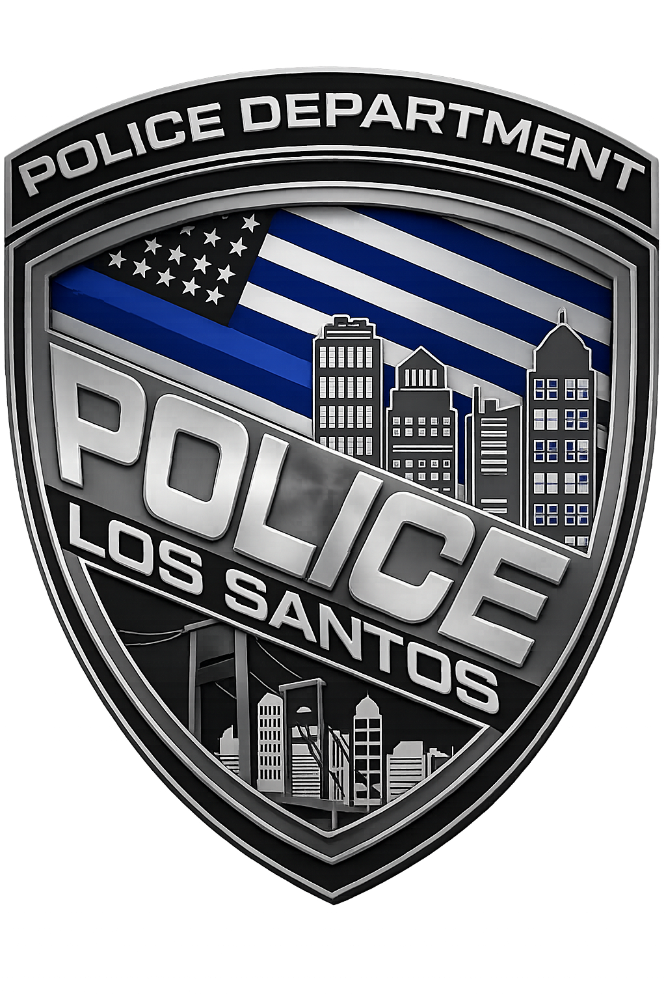

Secure command link
Initializing command systems
Internal Affairs Division
Policy registry
Try a different keyword or degree filter.
LSPD operational library
A structured desk for field conduct, command, progression, and institutional standards.